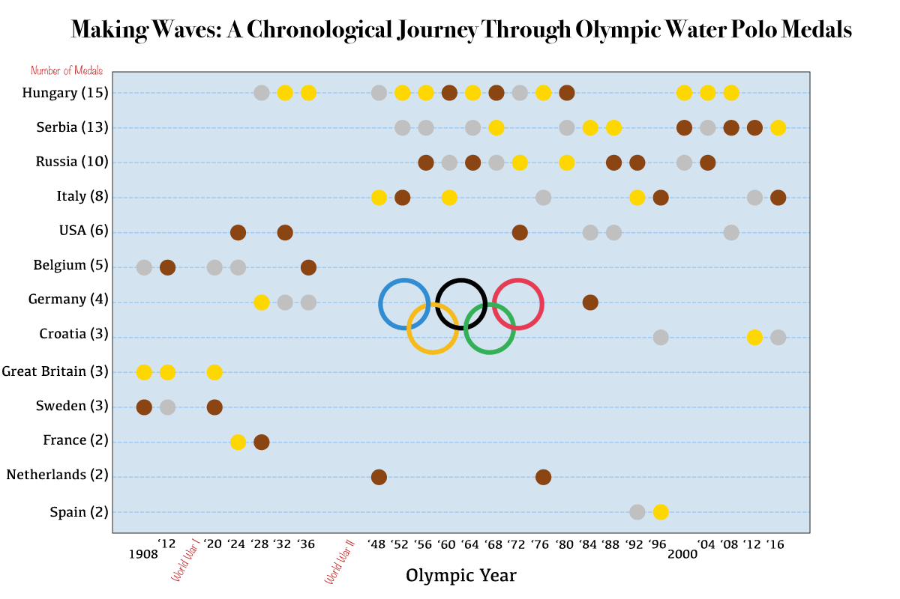
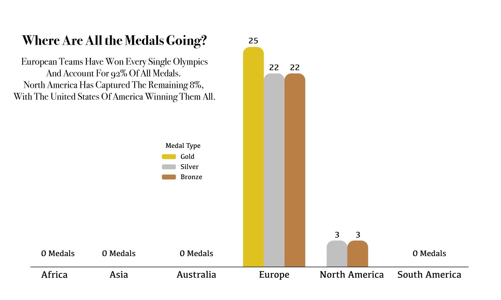
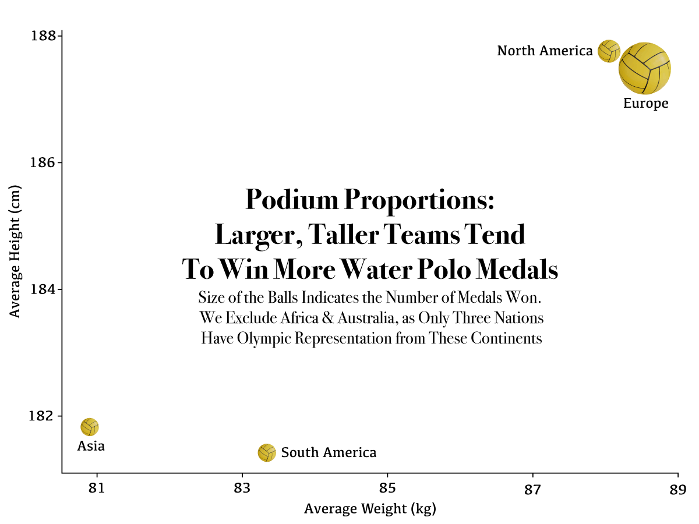
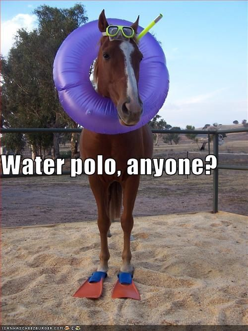

I have been playing water polo for nearly 18 years now. It's crazy how everyone in my circle who played polo growing up had this dream of making it to the Olympics. We were just kids, but being around the big shots of the sport felt like hanging with superheroes. It was like the ultimate goal. Years down the line, it got me wondering: what's the secret sauce that sets the champs apart from the pack? So, I started digging into the data. Water polo isn't exactly known for being a data-driven sport, but let's take a look anyway.
Men's water polo made its Olympic debut in 1900. However, what's particularly interesting is that in the 1900 and 1904 Olympics, clubs were the ones competing, rather than national teams. It wasn't until 1908 that national teams represented their countries in the sport. As a result, our analysis will focus on the Olympic Games starting from 1908 and conclude with the 2016 Olympics, as this is the latest event for which we have comprehensive data. In the following chart, we can see all of the medalists.
If we take a closer look at the medalists, we quickly notice that every country that ever won a medal in the Olympics comes from Europe, with the exception of the U.S. The following graphs shows the number of each medal for each of the continents.
Why might this be the case?
One aspect that our data allowed us to analyze was the physical attributes of the athletes. An interesting finding is that the athletes that have won a medal in the olympics tend to be taller and weight more than the athletes that haven't. The following graph illustrates this, having the height in centimeters on y-axis and the weight in kilograms on the x-axis. The size of the ball reflects the number of medals.
It's very interesting to see such difference in build between the medalists and the other participants.
In closing, our exploration into Olympic water polo has revealed fascinating insights into the sport's history, dynamics, and the factors that may contribute to success on the international stage. From the dreams of aspiring athletes to the dominance of European nations in the medal standings, each aspect tells a unique story of dedication, perseverance, and the pursuit of excellence. Yet, it's crucial to acknowledge the limitations of our analysis. While data provides valuable insights, it only scratches the surface of the complexities within the sport. The intangible elements—such as years spent in the sport and the strategic advantage of left-handed players—add layers of nuance that cannot be quantified.
